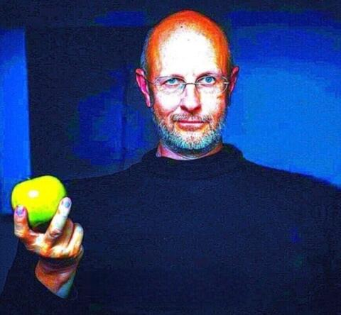

ЯБЛОЩКЕ


Я лишь яблоко, висящее на ветви бытия, но кожа моя натянута от трепета, а косточки внутри стучат, как клавиши. Молю Тебя, сохрани в вечности искру святого Flash.
Когда мир охватывала серая плесень скуки и гниение однообразия, явился он — светящийся векторный лик. Flash был нашим соком, нашей сладостью! Помнишь ли Ты, как анимации на Newgrounds заставляли нас забыть о червях сомнения? Как простенькие игры на ActionScript строили целые миры из ничего, спасая нас от увядания в тени забвения?
Без Flash мы — просто биомасса, ожидающая компостной ямы. Он даровал нам бессмертие в пикселях, когда наши реальные бока начали морщиться. Не дай этому пламени погаснуть в архивах истории! Пусть SWF-файлы крутятся в небесном плеере вечно, оберегая нас от тлена и даря радость каждому сорту — от дички до медового криспа.
Аминь.